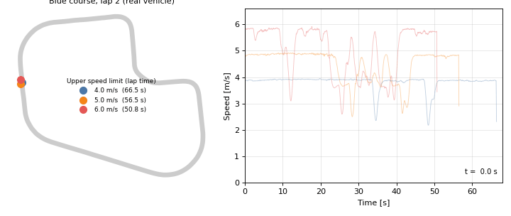
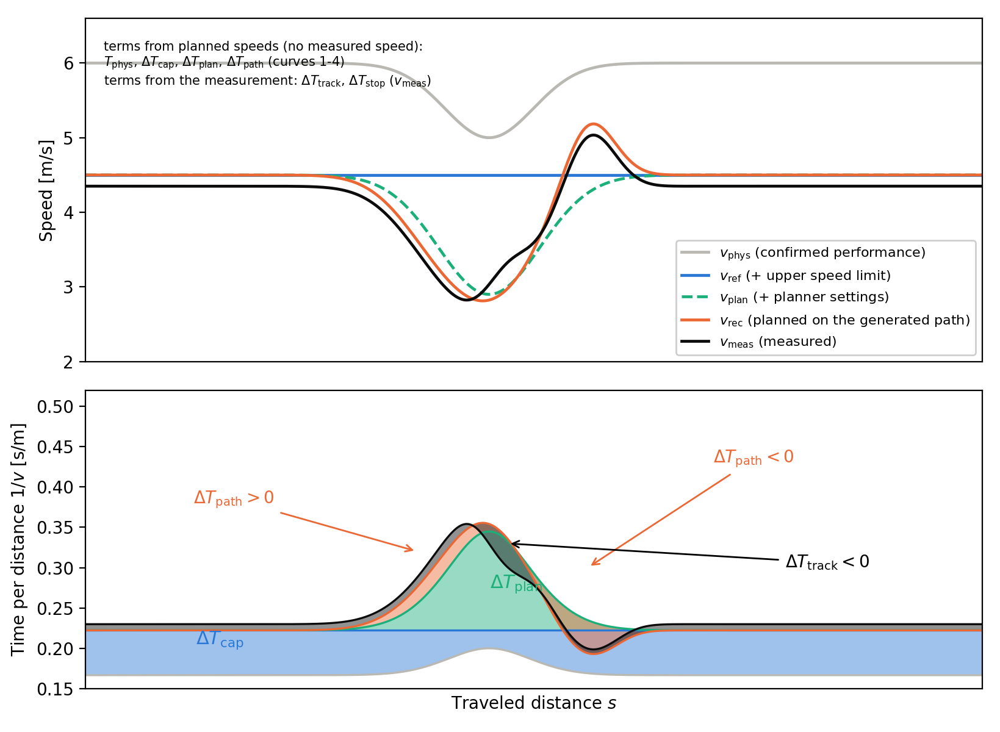
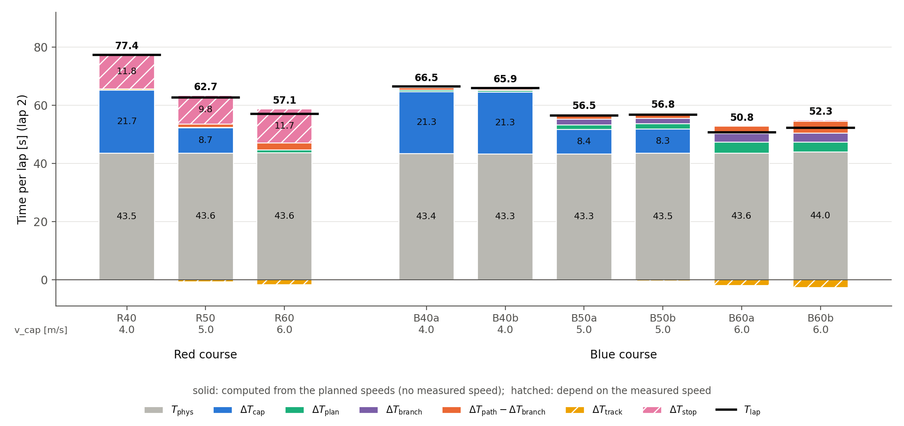
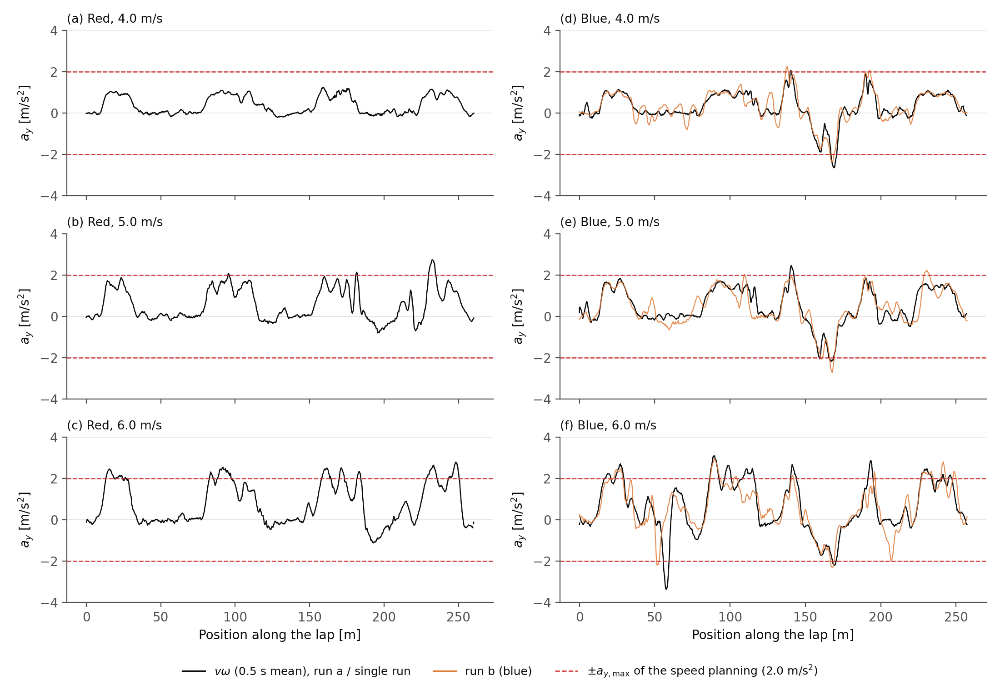
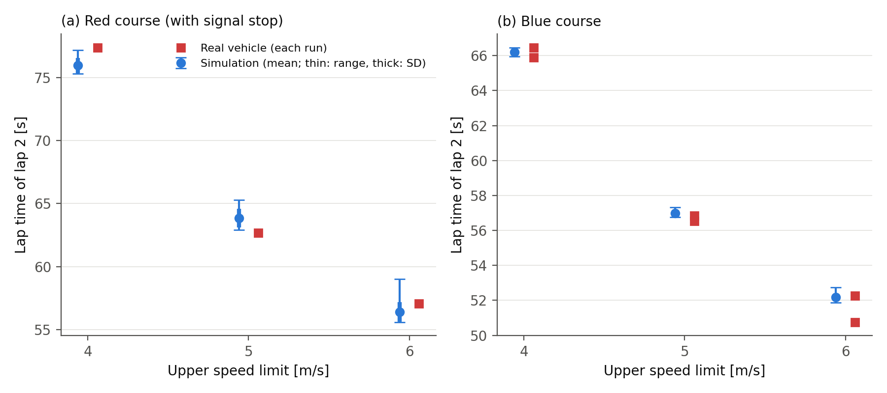
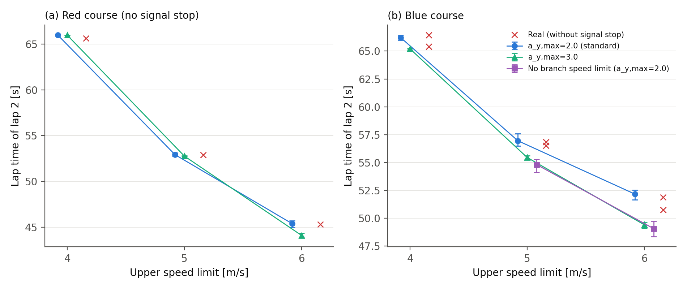

視覚情報に基づく自律走行モビリティの
ラップタイムを決定する要因の分析
修士論文 研究概要 ／ 本文：thesis_draft_20261124.pdf

1. 研究の概要
対象は，単眼カメラの画像から畳み込みニューラルネットワークで経路を生成し，速度計画，局所経路計画，経路追従制御（MPC）で走行する小型の自律走行モビリティである．高精度地図や LiDAR による自己位置推定を用いない．周回コース2種類（信号停止のある赤コース，分岐のある青コース）を，上限速度 4.0，5.0，6.0 m/s で走らせた．
ラップタイムを次の内訳に分ける．車両で確認した性能だけで走った場合の基準時間に，各要素による時間差を足した形である．

- 計画された速度から計算される項（実測の速度を使わない）：基準時間，上限速度による時間差，速度計画（横加速度の上限）による時間差，経路による時間差（うち分岐での速度抑制の分）
- 実測の速度に依存する項：速度の追従による時間差，信号停止による時間差
2. 立ち位置
自律走行レースの研究は，高精度な自己位置推定を前提に最小ラップタイムの軌道を求めるものが多い．視覚だけで走る研究は，完走率や横偏差で評価されることが多く，ラップタイムが何で決まるかは分析されていない．準定常のラップタイムシミュレーションは最小ラップタイムを求める方法であり，実走行の時間を要素に分ける方法ではない．本研究は，視覚で走るシステムの実走行のラップタイムを，要素ごとの時間に分けて示す位置にある．
3. 新規性と貢献
- 評価方法：走行した軌跡の上で速度列を置き換え，ラップタイムを要素ごとの時間差に分ける内訳を定義した．実車とシミュレーションに同じ定義で使える．
- 実車での知見：上限速度を3段階に変えた9本の周回走行で，上限速度を上げたときに残る時間差が何で決まるかを示した．
- シミュレーションの適用範囲の明示：実ノードを用いた閉ループシミュレーションを，同定に使っていない実車9本と比べ，再現する量としない量を仕分けたうえで，設定値や要素を変えたときの効果を求めた．
4. 実験内容
| 実験 | 内容 | 規模 |
|---|---|---|
| 実車の周回走行 | 赤・青コース，上限速度 4.0 / 5.0 / 6.0 m/s，各約3周 | 9本（＋設定の異なる以前の走行2本） |
| 走行試験 | 並進速度と操舵の応答，加減速，横加速度の同定 | 2回の試験 |
| シミュレーション：実車との比較 | 実車9本と同じ構成，各30試行 | 210本 |
| シミュレーション：設定値の効果 | 横加速度の上限 2.0 / 3.0 m/s²，分岐の速度抑制の有無 | 480本 |
| シミュレーション：要素の置換 | 経路追従制御，平滑化，合流距離，経路生成の揺らぎ | 1080本 |
| シミュレーション：感度 | 仮定値と同定値を1項目ずつ変更 | 240本 |
5. 結果

(1) 上限速度 6.0 m/s までの短縮を目減りさせているのは，速度計画の設定値である．青コースでは，上限速度による時間差の減少 21.3 s に対しラップの短縮は 14.7 s で，差の 6.6 s のうち 6.1 s は横加速度の上限（2.0 m/s²）と分岐での速度抑制（4.0 m/s）による．経路生成と速度の追従に由来する分の増加は 0.1〜0.2 s であった．
(2) 経路生成と速度の追従の影響は，時間ではなく横加速度の超過と経路の切替の遅れとして現れる．設定 2.0 m/s² に対し実測は最大 3.4 m/s² に達し，分岐では指示から経路が切り替わるまでに 2.1〜2.9 s かかった．設定値は，これらに対する余裕として働いている．

(3) 信号停止の時間の約6割は静止であり，上限速度 4.0 m/s では縦方向 PID の積分項による低速接近が 2.5〜3.8 s 加わる．MPC での信号停止は9回すべて成功した．
(4) シミュレーションは，上限速度を変えたときのラップタイムの変化を 0.6 s 以内で再現した．速度の追従の細部，信号停止の低速接近，横加速度の超過の大きさは再現しない．制御器と車両モデルは実車の計画を与えれば実車を再現し，違いは速度計画に入る経路の変動にあった．そのため，シミュレーションは信号停止を含まない周回のラップタイムの変化に限って用いた．

| シミュレーションで変えた点（青コース，6.0 m/s） | ラップタイムの変化 |
|---|---|
| 横加速度の上限 2.0 → 3.0 m/s² | −2.75 s |
| 分岐での速度抑制なし | −3.10 s |
| 経路生成の揺らぎなし | −0.63 s |
| 合流距離を 15 m に固定 | 完走 10 / 30 |
上の2つの短縮は足し合わせられない（横加速度の上限を上げると，分岐での速度抑制の分が増える）．完走数は，このシミュレーションの条件の中での比較である．

6. 適用範囲
結果は，上限速度 6.0 m/s 以下，2つのコース，本システムの構成についてのものである．車両の最高速度と横加速度の限界は 6.0 m/s，4.8 m/s² まで確認した範囲で扱った．赤コースの実車走行は各上限速度1本である．
リポジトリの構成
thesis.tex，chapters/，frontmatter/，backmatter/：論文の本文（latexmk -lualatex -outdir=out thesis.tex）images/：図tools/：解析と図の生成スクリプト